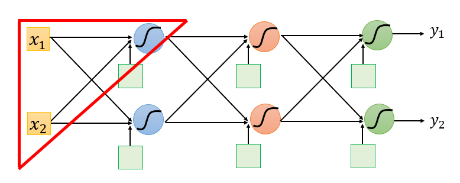
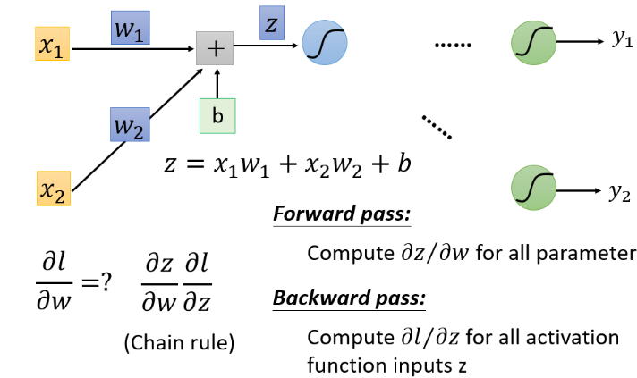
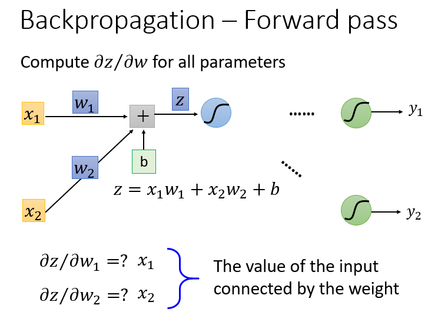
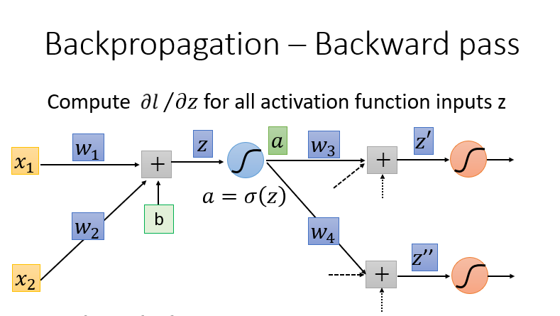
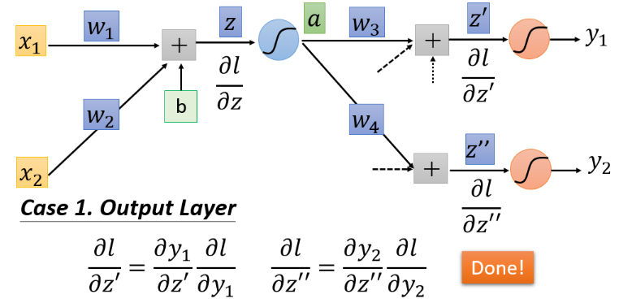
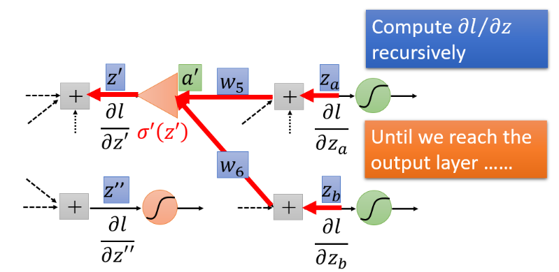
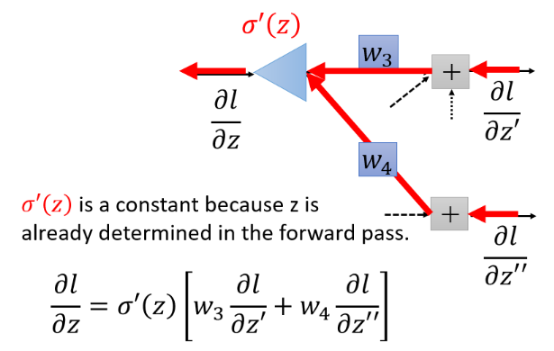
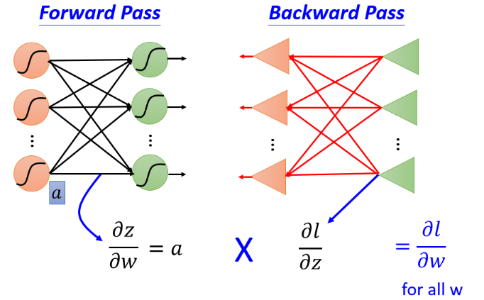

反向传播算法 Back-Propagation
Table of Contents
1 背景
在神经网络中更新参数时，经常需要使用梯度的方法来更新参数。反向传播就是用来有效的求输出值和每个参数导数的有效方法。
2 链式求导法则
\begin{equation}
y = f(x) \\
z = g(x) \\
w = m(x) \\
s = y + z + w \\
\nabla_{x} = \frac{\partial{s}}{dx} = \frac{\partial{y}}{dx} + \frac{\partial{z}}{dx} + \frac{\partial{w}}{dx}
\end{equation}
3 反向传播
在神经网络中截取一小段，不妨将我们的问题转化为求此段网络中输入\(x_1,x_2\)的梯度。

取出其中一个神经元（Neuron），拆开分析：

可以看出，\(\nabla_w\)由两部分组成\(\frac{\partial{l}}{dz} \frac{\partial{z}}{dw}\)。
3.1 Forward Pass 前向传播
先来求求\(\frac{\partial{z}}{dw}\)。

从前面向后面计算一次，相对于每个神经元来说，每个神经元的输入即是各自的\(\frac{\partial{z}}{dw}\)。
3.2 Backward Pass 反向传播

其中，\(a\)为激活函数（Activation Function）的输出。
\begin{equation} \begin{split} \frac{\partial{l}}{dz} &= \frac{\partial{l}}{da} \frac{\partial{a}}{dz} \\ &= (\frac{\partial{l}}{dz^{\prime}} \frac{\partial{z^{\prime}}}{da} + \frac{\partial{l}}{dz^{\prime \prime}} \frac{pritial{z^{\prime \prime}}}{da}) \frac{\partial{a}}{dz} \\ &= (\frac{\partial{l}}{dz^{\prime}} w_3 + \frac{\partial{l}}{dz^{\prime \prime}} w_4) \frac{\partial{a}}{dz} \end{split} \end{equation}如果要从前往后的计算每一层的\(\frac{\partial{l}}{dz}\)，显然计算每一层都需要计算从这一层开始的之后所有层的输出；但我们如果换一种方法，从后向前计算，那么只需要计算一次就足够了。
3.2.1 输出层

3.2.2 中间层

利用下一层的结果求本层的\(\frac{\sigma{l}}{z}\)：

4 总结
使用 Forward Pass 计算\(\frac{\partial{z}}{dx}\)，使用 Backward Pass 计算\(\frac{\partial{l}}{dz}\)，最后将两个值相乘，即是对应参数的梯度。
